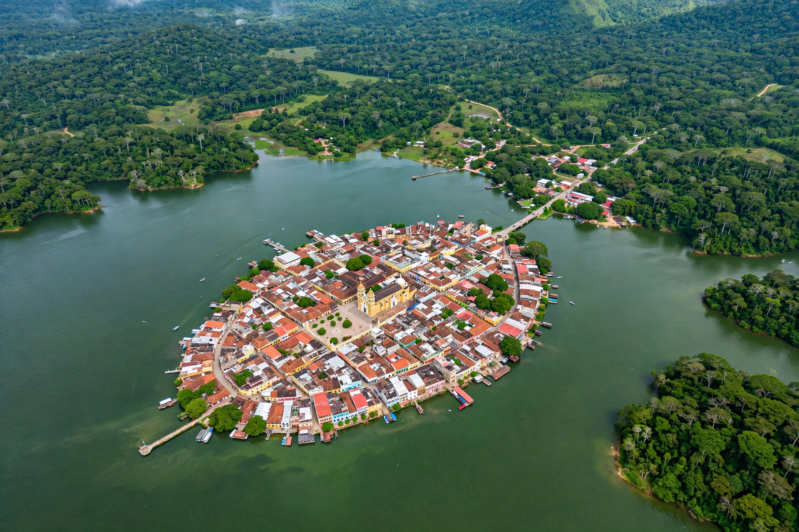

From Wikipedia, the free encyclopedia
| Nojpetén | |
| Other names | Tayasal; Noh Petén ("Great Petén" / "island city") |
|---|---|
| Location | Lake Petén Itzá, Petén Department, Guatemala (modern Flores) |
| Culture | Itza Maya |
| Period | Postclassic to 1697 |
| Last ruler | Kan Ek' (Aj Kan Ek') |
| Fell | 13 March 1697, to forces under Martín de Ursúa |

Nojpetén (also spelled Noh Petén, and known to the Spanish as Tayasal) was the island capital of the Itza Maya kingdom on Lake Petén Itzá in the Petén Department of modern Guatemala. Founded by the Itza after their migration into the Petén lakes region following the fall of their earlier centres in Yucatán, Nojpetén survived as the last independent indigenous Maya state for nearly two centuries after the Spanish conquest began, until it was stormed by Spanish forces under Martín de Ursúa on 13 March 1697 — the final conquest of the last free Maya kingdom.
The Itza, a Maya group whose traditions linked them to Chichén Itzá in Yucatán, established themselves around Lake Petén Itzá by the Postclassic period. Their island capital — its name meaning "Great Petén" or "island city" — was densely built with temples, palaces, and houses; early Spanish visitors described whitewashed temples and a large population, with subject towns around the lakeshore. Franciscan friars reached Nojpetén as early as 1618, when Bartolomé de Fuensalida and Juan de Orbita were received by the ruler Kan Ek' but failed to secure conversions and were forced to leave after an incident involving a Christian statue. For decades the Itza maintained a wary diplomatic game — trading words with Spanish Yucatán, profiting from the horse trade, and resisting absorption — while Spanish entradas repeatedly failed to find or force a route to the lake.
In the 1690s Spain determined to open a road (camino real) from Yucatán to Guatemala through Petén. Martín de Ursúa y Arizmendi, governor of Yucatán, built a fortified base and a road to the lake, constructed a shallow-draft vessel (galeota) on the shore, and, after the failure of negotiations and a violent clash in which Itza forces killed Spanish emissaries, launched an amphibious assault on the island on 13 March 1697. The Itza defenders, many of whom fled by canoe as the assault landed, were overwhelmed; the temples were destroyed and a Spanish town — modern Flores — was founded on the site, with a presidio on the island. Kan Ek' was captured and later died in captivity in Guatemala. The fall of Nojpetén closed the Spanish conquest of the Maya world, some 176 years after the fall of Tenochtitlan.
Because Flores still occupies the island, archaeology at Nojpetén has been limited to salvage work during construction and utility trenches, which have recovered Postclassic ceramics, the foundations of colonial structures, and evidence of the pre-Hispanic occupation beneath the modern streets. Underwater and lakeshore surveys around the island have added finds of Itza-period material.